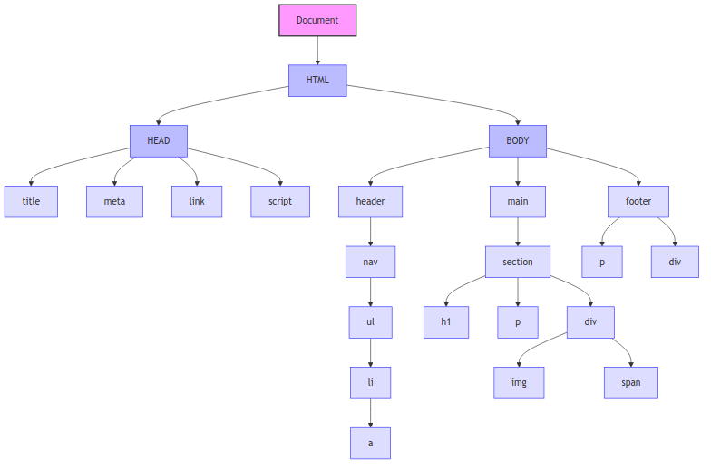

Document Object Model (DOM)
The Document Object Model (DOM) is a hierarchical structure that treats an HTML (or XML) document as a tree that consists of nodes that represent parts of the document.
The main use of the DOM is to programmatically change the structure or content of a document, e.g. through the use JavaScript. Nodes in the DOM can have event handlers attached to them. This means when a user triggers a certain event on that node, code can be executed.
A challenge arises when the visible UI needs to be synchronized with with changing application state. Updating the web page is then done using DOM reconciliation, i.e. making the minimum necessary changes to the DOM rather than rebuilding it. Approaches to DOM reconciliation include:
- DOM replacement (inefficient)
- Virtual DOM diffing (React's approach)
- Fine-grained reactivity systems (Solid.js, Svelte)
- HTML-over-the-wire techniques (htmx, Hotwire)
- DOM Morphing without Virtual DOMs
DOM Tree Diagram

<!DOCTYPE html> <html lang="en"> <head> <title>Sample Page</title> <meta charset="UTF-8" name="viewport" content="width=device-width"> <link rel="stylesheet" href="styles.css"> <script src="script.js"></script> </head> <body> <header> <nav> <ul> <li><a href="#">Home</a></li> <li><a href="#">About</a></li> <li><a href="#">Services</a></li> <li><a href="#">Contact</a></li> </ul> </nav> </header> <main> <section> <h1>Welcome to Our Website</h1> <p>This is a sample page demonstrating a typical DOM structure.</p> <div> <img src="sample-image.jpg" alt="Sample Image"> <span>Image caption goes here</span> </div> </section> </main> <footer> <p>© 2025 Sample Website</p> <div> <a href="#">Privacy Policy</a> | <a href="#">Terms of Service</a> </div> </footer> </body> </html>
Virtual DOM
A virtual DOM is used by frameworks like React or Vue to have a lightweight representation of the actual DOM in Javascript. This means it can be manipulated quickly in memory before committing changes to the actual browser DOM.
Every time state changes, a new virtual DOM is created. In a diffing step, this DOM is then compared with the previous one. Only differences are then applied to the real DOM in a patching step.
This approach optimizes performance by batching changes together & calculating the minimal set of operations needed.
DOM Morphing
DOM morphing is a DOM reconciliation technique that updates web page content by transforming the existing DOM rather than completely rebuilding it.
DOM morphing specifically focuses on direct manipulation of the real DOM by comparing the current and target states, then applying the minimal set of transformations needed.
Key concepts:
- Diffing algorithm: Identify changes needed to turn current to desired DOM
- In-place updates: Modify only necessary attributes, text, and elements
- Element reuse: Preserve existing DOM nodes by updating only their properties
- Tree reconciliation: Handle structural changes with optimal node movements
Implementation approaches:
- Manual DOM morphing: Directly manipulating DOM with vanilla JavaScript
- Virtual DOM libraries: React, Vue, etc. use virtual DOM diffing
- Specialized morphing libraries: morphdom, dom-diff, and Alpine.js
- Modern approaches: Server components, HTML-over-the-wire (Hotwire, htmx)